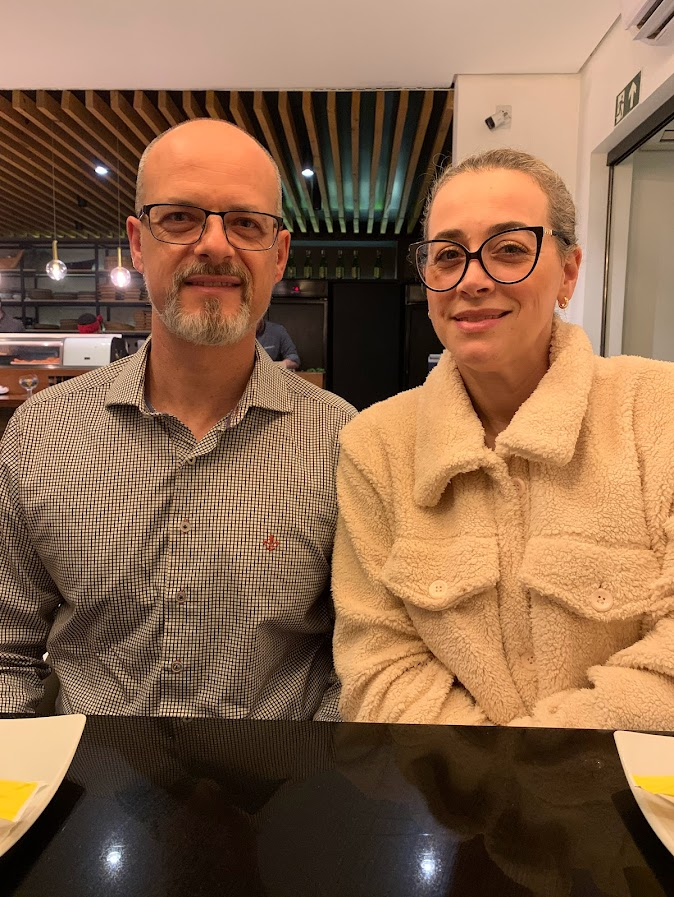
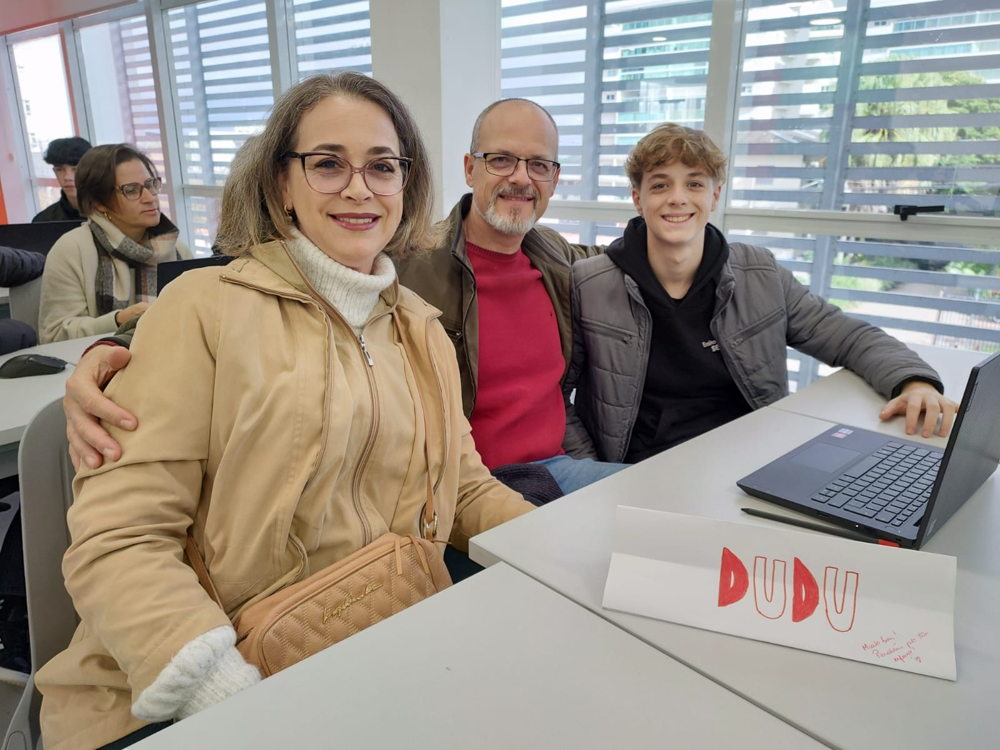

Noruega, onde a natureza e a cultura se unem para criar uma experiência de viagem inesquecível. Com seus
fiordes majestosos e cidades encantadoras, este país oferece uma mistura perfeita de aventura e
tranquilidade.
Pontos Turísticos:
Fiordes Noruegueses: Os fiordes noruegueses são verdadeiras maravilhas naturais, oferecendo paisagens de
tirar o fôlego e oportunidades únicas para explorar a beleza selvagem do país.
Tromsø: Conhecida como a "Porta do Ártico", Tromsø oferece uma experiência autêntica do estilo de vida
norueguês, além de ser um dos melhores lugares do mundo para observar a aurora boreal.
Suécia
Suécia, um país rico em história, cultura e beleza natural. Com suas cidades e paisagens deslumbrantes, este
destino cativante oferece uma variedade de experiências para todos os gostos.
Pontos Turísticos:
Estocolmo: A capital sueca é uma mistura de tradição e modernidade, com seus palácios históricos, museus
fascinantes e arquitetura impressionante.
Aurora Sky Station: Localizada em Abisko, a Aurora Sky Station oferece uma visão deslumbrante da aurora
boreal, proporcionando uma experiência mágica.
Dinamarca
A Dinamarca é um país conhecido por sua atmosfera acolhedora, design inovador e rica herança histórica. De
suas cidades vibrantes a suas paisagens deslumbrantes, há algo para todos os viajantes neste destino
encantador.
Pontos Turísticos:
Copenhague: A capital dinamarquesa é uma cidade encantadora, repleta de charmosas ruas de
paralelepípedos, canais e uma atmosfera acolhedora.
Castelo de Kronborg: Localizado em Helsingør, o Castelo de Kronborg é uma fortaleza renascentista que
inspirou a obra-prima de Shakespeare, "Hamlet".
Finlândia
Finlândia, um país de paisagens, design e cultura única. Com sua natureza intocada e cidades modernas, este
destino oferece uma variedade de experiências para os viajantes explorarem.
Pontos Turísticos:
Santa Claus Village: Situada em Rovaniemi, esta vila é o lar do Papai Noel, onde pode-se experimentar o
espírito mágico do Natal durante todo o ano.
Parque Nacional de Nuuksio: Localizado perto de Helsinque, o Parque Nacional de Nuuksio é um refúgio
tranquilo, de florestas exuberantes, lagos cristalinos e trilhas para caminhadas.
Islândia
Finalizando, a Islândia é uma terra de contrastes, onde o fogo e o gelo se encontram para criar paisagens
únicas. Com sua natureza selvagem e cultura é um país que oferece uma experiência incrível.
Pontos Turísticos:
Círculo Dourado: Esta rota turística icônica inclui três das atrações mais impressionantes da Islândia -
o Parque Nacional de Thingvellir, as Cachoeiras de Gullfoss e os Geysers de Geysir.
Lagoa Azul: Conhecida por suas águas termais azuis cristalinas, a Lagoa Azul é um oásis de relaxamento.
Os visitantes podem desfrutar de banhos quentes e tratamentos de spa em meio à paisagem vulcânica.
Obrigado, Pai e Mãe!


Pai
"Tudo vale a pena se a alma não é pequena"
Mãe
Adorei conhecer mais um pouco desses lugares tão lindos! Parabéns pelo teu esforço e dedicação.